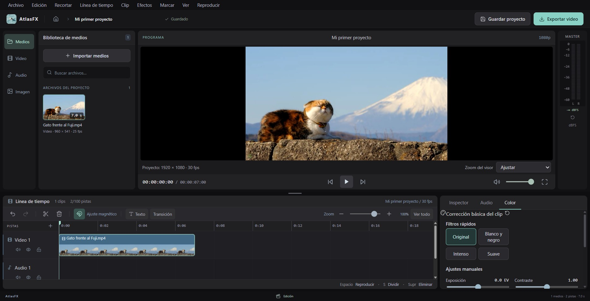
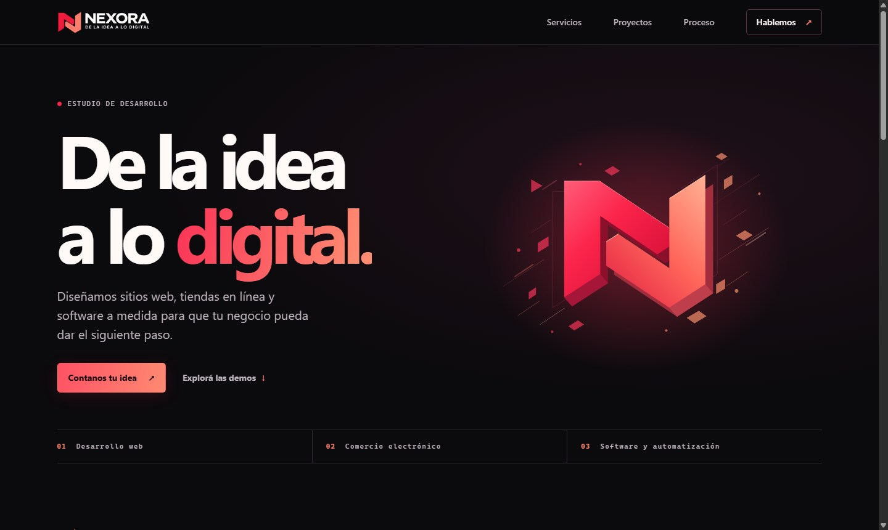
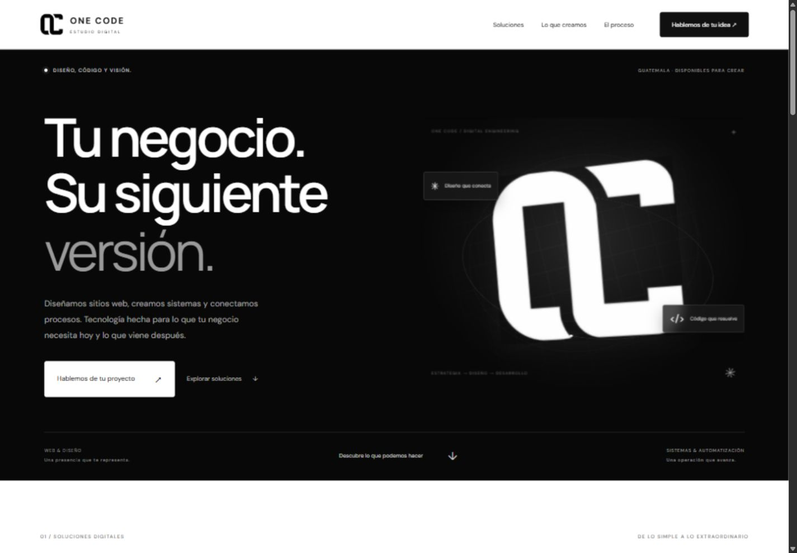

Probar editorAtlasFX
Editor de video multipista con interfaz en español, biblioteca de medios y edición local.
PORTAFOLIO PERSONAL
Desarrollador web y de software, con experiencia en bases de datos y sistemas empresariales.
Disponible para oportunidades de desarrollo 100 % remotas desde Guatemala.
Explorar proyectosPERFIL
Desarrollo sitios web y aplicaciones con interfaces claras y fáciles de usar. Me enfoco en entender qué necesita resolver cada proyecto y convertirlo en una herramienta que simplifique el trabajo.
En este portafolio presento proyectos de desarrollo web y software, desde sitios de servicios digitales hasta AtlasFX, un editor de video multipista para web y escritorio.
SELECCIÓN / 01—03
Sitios web y software que podés abrir y probar.

Probar editorEditor de video multipista con interfaz en español, biblioteca de medios y edición local.

Abrir sitioSitio de un estudio de desarrollo, con demos conceptuales y un formulario que prepara un resumen para compartir.

Abrir sitioEstudio digital en Guatemala. Rediseño en blanco y negro, identidad OC animada y presentación de servicios y proyectos.